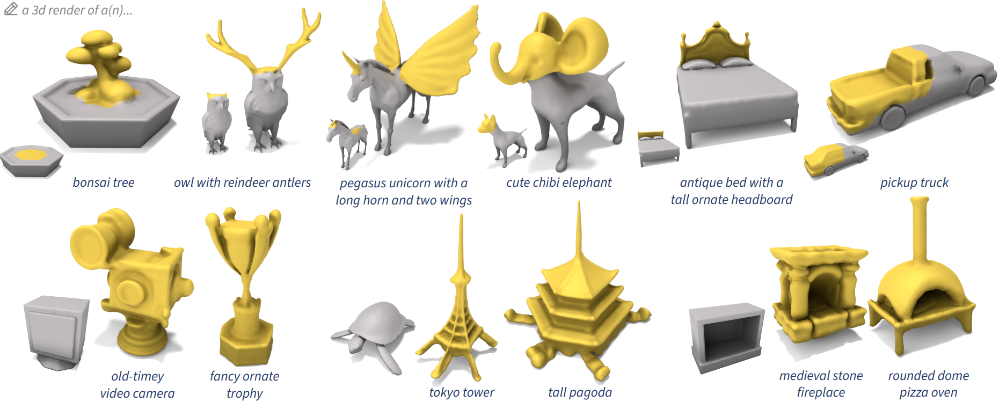
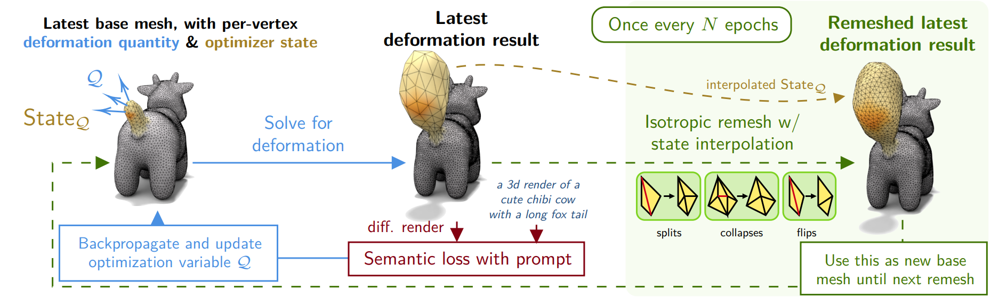
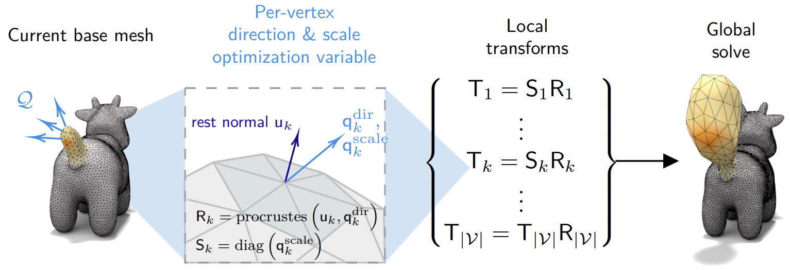
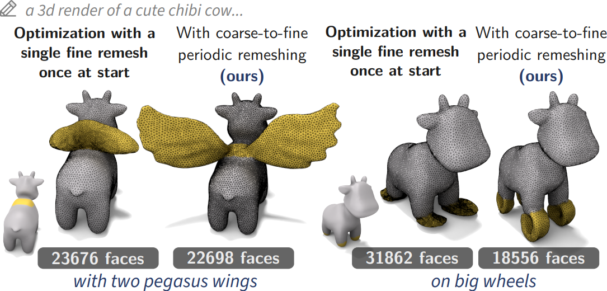
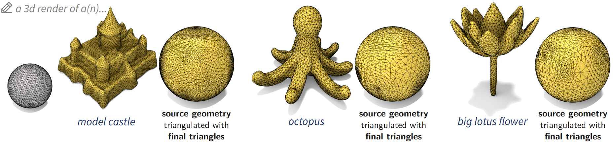
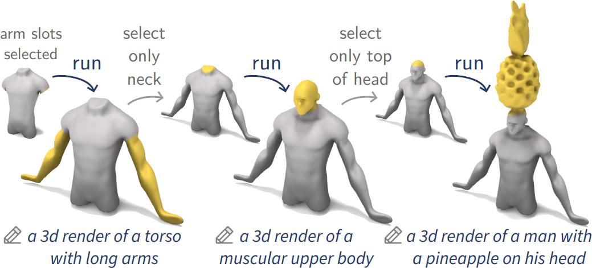
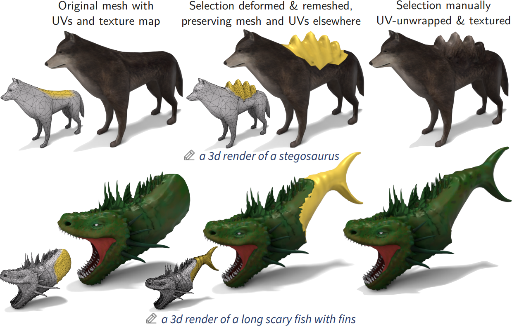

RADmesh: Remesh-Aware Mesh Deformation
1University of Chicago, 2University of
Southern California, 3Technion

Top row: our method is capable of growing large parts out of small selected regions on diverse shapes, organic and manufactured. The results show symmetry, high detail even at extremities, and clean geometry at selection boundaries. Bottom row: we can also perform global "detailization" deformations, where the whole shape is allowed to change. This is useful on simple base shapes and demonstrates the ability to change both high-level structure and finer details.

Geometry is optimized via gradient descent of our vertex-based deformation quantity Q, with associated optimizer state, with respect to a base mesh. At epoch i, we solve for the deformation, render, take visual loss (in our case, Cascaded Score Distillation, an SDS variant), and update the quantity. Once every N epochs, we remesh the last deformed shape, interpolate the optimizer state onto the result, and use it as the new source mesh until the next scheduled remesh.

The extra scale parameter provides enough extra degrees of freedom to allow deformations that grow large, detailed parts, while staying minimal enough to be explicitly controllable (for example, by applying clamps to the parameter directly rather than adding losses) and gradual enough to work with our periodic remeshing.
At regular intervals during deformation optimization, we isotropically remesh the latest deformed surface using the Botsch-Kobbelt remeshing method. Each iteration of the Botsch-Kobbelt method involves edge splits (to shorten long edges), edge collapses (to remove tiny edges) , edge flips (to balance vertex valencies), tangential smoothing (to relax sharp triangles), and reprojection (to preserve the original surface). Every N = 100 deformation optimization epochs, we trigger a remesh, consisting of 2 Botsch-Kobbelt iterations.
Crucially, we use the barycentric coordinates from the reprojection step to interpolate vertex attributes. Since our optimization variable is a per-vertex quantity, this includes the optimizer state, in addition to the selection region itself.

The target edge length for the Botsch-Kobbelt method is on a coarse-to-fine schedule over the course of remeshes. We show that this coarse-to-fine schedule is essential: simply finely remeshing the region only once at the start, even to higher resolutions than the final resolution of our coarse-to-fine schedule, fails to produce large, quality growths. This shows the significance of a coarse-to-fine remeshing schedule.

Taking global deformation of a sphere as an example, we show that each final triangulation, when applied to the original geometry, encodes the structures and appendages requiring high vertex density in the result shape. This shows the appropriateness and adaptivity of the generated triangulation for the generated geometry, not merely a uniform upsample of the original triangulation.

An example extended workflow comprising multiple prompts. We can iteratively add parts (arms, head, and a pineapple on the head) to the torso with high detail, including on top of previously grown parts.

Despite changing connectivity, our method interpolates vertex attributes inside, and fully preserves correspondence, geometry, and data of mesh elements (such as corner UVs) outside the region selected for deforming and remeshing. We demonstrate the workflow of deforming and remeshing a region on a mesh with existing UVs and texture: the rest of the mesh is unchanged, and the user can choose to unwrap and texture the newly grown geometry.
@inproceedings{dinh2026radmesh,
title = {RADmesh: Remesh-Aware Mesh Deformation},
author = {Dinh, Nam Anh and Lang, Itai and Stein, Oded and Hanocka, Rana},
booktitle = {European Conference on Computer Vision (ECCV)},
year = {2026}
}